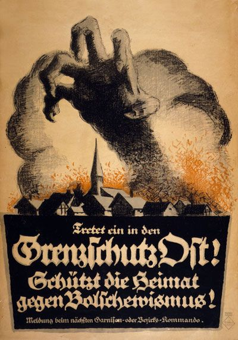
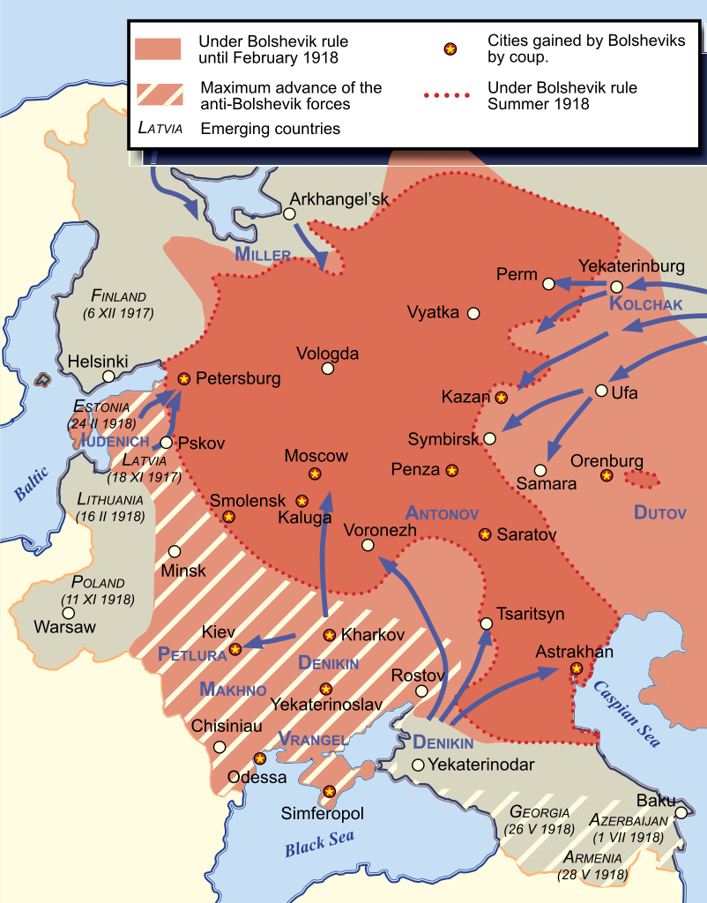

 The idea of communism started way before World War 1, with Karl Marx writing the Communist Manifesto, which focused on the problems of the capitalist societies and the rise of a worker class. The Bolshevik revolution led by Vladimir Lenin would lead to the establishment of the first communist country. Russia in a post WWI grew rapidly due to movement from an agrarian society to an industrial one. Alongside new social programs allowed for many Russians to have better lives at the time.
In a post war Europe, the idea of communism received a mixed response with many supporting, while others against it. Some communist revolutions would occur across the globe before the dawn of WWII. A revolution in Germany failed, while the Hungarian soviet Republic lasted for five month. Spain would also have a communist revolution in 1936, but not long after would enter a civil war between two parties.
Overall the rise of communism before WWII would lead to a general distaste in Europe and the United States, communism would spread a lot more during the Cold War Era where the superpowers of the world became the Communist USSR and the Capitalist United States. Most countries have removed their communist governments due to the capitalist markets that drive the globe, only five countries remain: China, North Korea, Vietnam, Laos and Cuba.